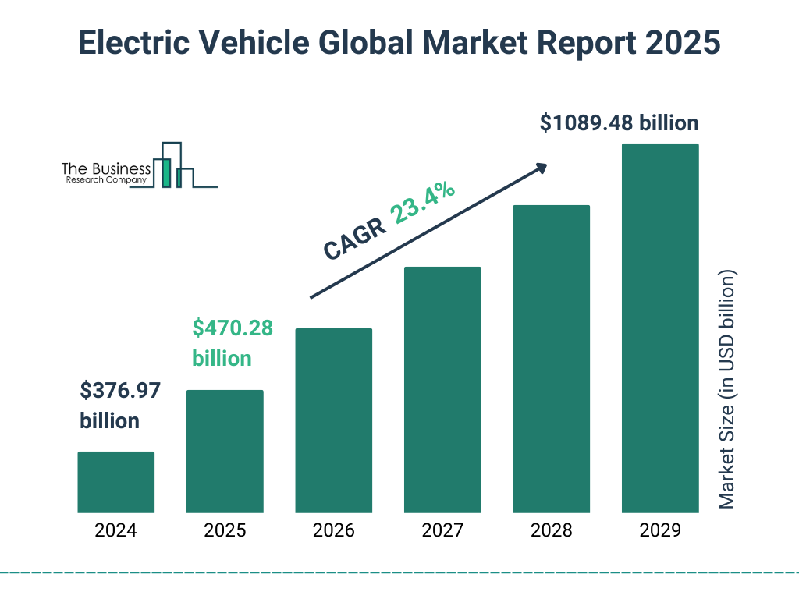
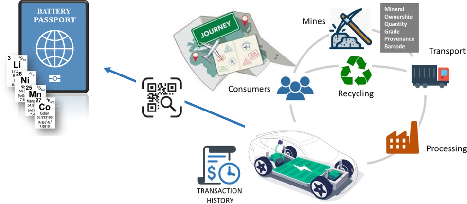
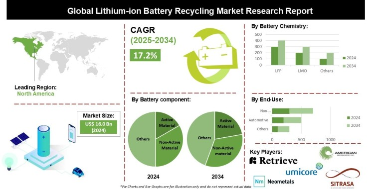
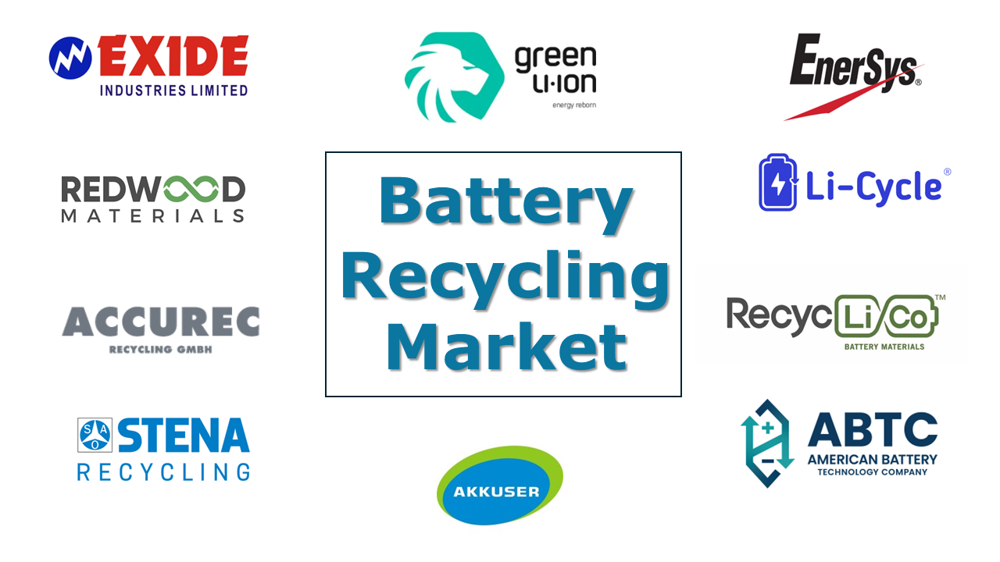
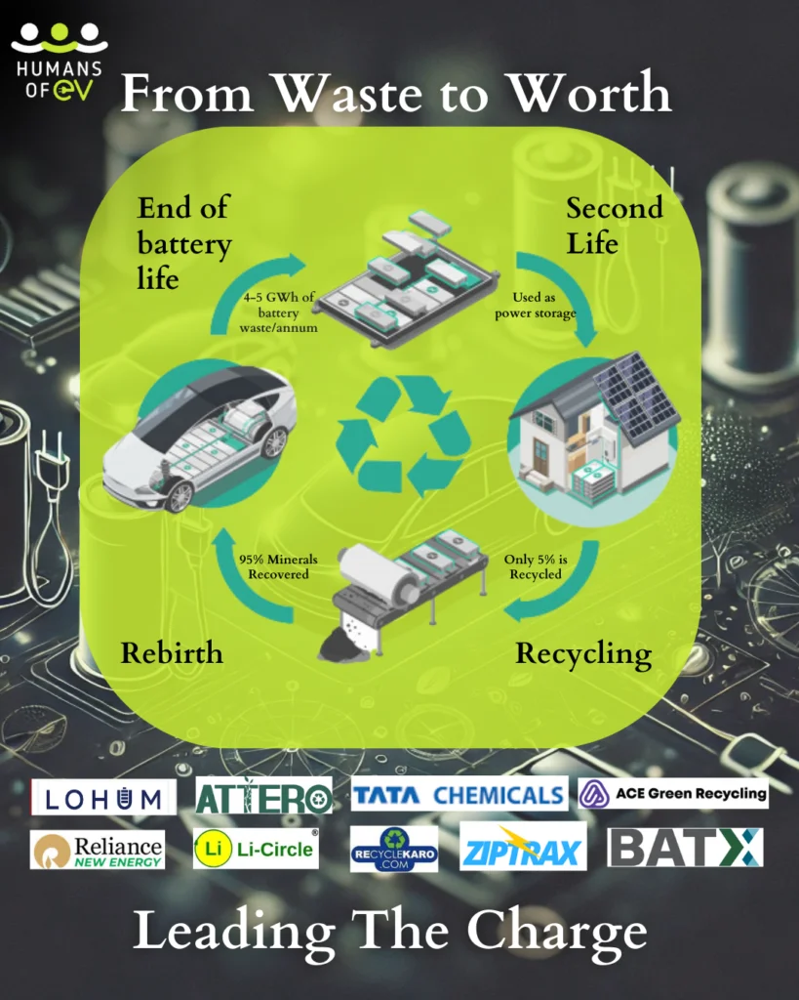

Introduction
Battery recycling is no longer a niche industry—it's a booming, billion-dollar business. With the rising demand for electric vehicles (EVs), portable electronics, and energy storage solutions, the world is facing a massive surge in battery consumption. But with this surge comes a pressing need for recycling.
In this article, we’ll explore why battery recycling is becoming a lucrative industry and how it benefits businesses, the environment, and global economies.
Booming Electric Vehicle Market
The rapid adoption of electric vehicles stands as a primary catalyst for the exponential growth observed in the battery recycling market. Global sales of EVs reached an impressive 17.1 million units in 2024, marking a substantial 25% increase compared to the previous year. This upward trend is projected to continue strongly in the foreseeable future. Notably, nearly one in five cars sold globally in 2023 was electric, with approximately 14 million new electric vehicles registered.
This surge in EV adoption directly correlates with a future increase in the volume of end-of-life EV batteries that will require recycling. While the lifespan of EV batteries is generally estimated to be between 10 and 20 years, or 100,000 to 200,000 miles, with some even exceeding these figures, the sheer scale of recent and projected EV sales guarantees a significant rise in the demand for battery recycling infrastructure in the coming decade.

The time lag between the initial surge in EV sales and the eventual retirement of their batteries creates a predictable and growing need for robust recycling capabilities. Furthermore, regional variations in EV adoption rates, such as the strong growth observed in China compared to the more moderate pace in Europe in 2024, will likely influence the geographical distribution of battery recycling demand, highlighting the dynamic nature of this global market. Although longer battery lifespans might slightly delay the immediate peak in recycling volumes, the substantial number of EVs being sold ensures a considerable long-term demand for recycling services.
Environmental Regulations
Governments around the world are increasingly recognizing the importance of battery recycling and are implementing regulations and initiatives to promote and, in some cases, mandate it. In Europe, the European Union has taken a proactive stance by adopting a comprehensive Batteries Regulation.
For lithium-based batteries, minimum recycling efficiency targets are set at 65% by December 2025 and increasing to 70% by December 2030. Additionally, the regulation establishes specific recovery rates for critical minerals such as lithium, nickel, and cobalt. By 2031 and 2036, minimum levels of recycled content in new batteries will also be required. The introduction of battery passports will further enhance traceability and facilitate the end-of-life processing of batteries.

Renewable Energy Storage Demand
The increasing demand for critical raw materials used in batteries, such as lithium, cobalt, and nickel, underscores the vital role of recycling in ensuring a sustainable supply chain. These materials are finite resources, and their growing use in the expanding EV and energy storage sectors raises concerns about supply chain security and potential price volatility.
Advancements in Recycling Technologies
The primary recycling methods currently employed include hydrometallurgy, pyrometallurgy, and direct recycling, all of which are undergoing continuous innovation.
Hydrometallurgy involves using chemical solutions to extract valuable metals, with ongoing efforts focused on developing greener and more efficient processes, including the exploration of deep eutectic solvents and bioleaching.
Pyrometallurgy utilizes high-temperature smelting and is often combined with hydrometallurgical processes to enhance efficiency, although it is known to be energy-intensive.

Direct recycling aims to recover cathode materials while preserving their structural integrity, thereby reducing energy consumption and environmental impact. Several companies are pioneering novel direct recycling techniques. The integration of artificial intelligence, automation, and digital tools such as blockchain technology is further revolutionizing the industry by optimizing operational processes, ensuring material traceability, and improving overall efficiency.
There is also a growing focus on developing effective recycling processes for newer battery chemistries, such as Lithium Iron Phosphate (LFP) batteries. The increasing adoption of more environmentally friendly recycling methods like hydrometallurgy and bioleaching reflects a growing commitment to minimizing the environmental impact of the recycling process itself.
Challenges Facing the Industry
Despite its promising outlook, battery recycling faces several hurdles:
- Feedstock Shortages Many recyclers currently rely on manufacturing scrap rather than end-of-life batteries due to their extended lifespan. This creates a temporary bottleneck in supply.
- High Costs and Technological Barriers Recycling processes like hydrometallurgy and pyrometallurgy are expensive and complex, requiring significant R&D investments to improve efficiency and scalability.
- Safety Issues Spent batteries contain hazardous materials that pose risks during transportation and storage, necessitating stringent safety measures.

Key Players in the Battery Recycling Industry
The Battery Network Exide Technologies, LLC Cirba Solutions American Battery Technology Company Gopher Resource East Penn Manufacturing Co. Aqua Metals, Inc. Li-Cycle Redwood Materials AB STENA METALL FINANS (PUBL) Umicore Glencore LG Energy Solution Panasonic 7-Eleven ACE Green Recycling, Inc. Athena Technology Solutions

1. Attero Recycling
Overview: Founded in 2007, Attero Recycling is India's largest and one of the world's most advanced lithium-ion battery recycling companies.
Key Features:
- Processes 3,500 tonnes annually, with plans to increase capacity to 12,000–13,000 tonnes.
- Recovers over 98% of valuable metals like lithium, cobalt, nickel, and manganese.
- Operates a carbon-positive circular economy model through urban mining technologies.
Future Plans: Aims to recycle 250,000 tonnes globally by 2025 and expand to 1 million tonnes by 2030.
2. Lohum Cleantech
Overview: LOHUM is India's largest producer of sustainable energy transition materials and a leader in lithium-ion battery recycling and repurposing.
Key Features:
- Provides recycling, reuse, and low-carbon refining technologies.
- Supplies recycled materials to major clients like Tata Motors and Mercedes-Benz Energy.
- Issues over 70% of Extended Producer Responsibility (EPR) certificates in India.
Vision: Plans to recycle 4 million metric tonnes of batteries by 2026.
3. BatX Energies
Overview: A pioneer in lithium-ion battery recycling, BatX Energies employs eco-friendly processes to recover critical materials.
Key Features:
- Utilizes patented "Net Zero Waste, Zero Emissions" technology.
- Extracts high-grade materials like lithium, cobalt, nickel, and manganese for reuse in new batteries.
- Focuses on minimizing environmental impact through advanced hydrometallurgical methods.
4. RecycleKaro
Overview: Recyclekaro operates India's largest lithium-ion battery recycling facility near Mumbai.
Key Features:
- Achieves over 90% recovery efficiency with purity levels exceeding 99%.
- Processes up to 2,500 metric tonnes annually with plans to expand capacity to 50,000 metric tonnes by 2025.
- Collaborates with industry leaders like Bajaj Auto for EV battery recycling.

5. ACE Green Recycling
Overview: ACE Green Recycling, Inc. focuses on sustainable solutions for both lead-acid and lithium-ion batteries.
Key Features:
- Adopt zero-waste hydrometallurgical processes for material recovery.
- Establishing recycling plants in Uttar Pradesh and Gujarat with a combined annual capacity of over 30,000 tonnes.
6. Gravita India
Overview: Known for lead battery recycling, Gravita India Limited is expanding into lithium-ion battery recycling for EVs.
Key Features:
- Plans to leverage domestic raw materials under India’s Battery Waste Management Rules.
- Operates multiple recycling facilities across India and Africa
7. Evergreen Lithium Recycling
Overview: A growing player in lithium-ion battery recycling in India.
Key Features:
- Extracts critical metals like cobalt, nickel, manganese, and lithium from end-of-life batteries.
- Supports a circular economy through efficient material reuse
8. LICO Materials
By 2027, LICO Materials Private Limited aims to recycle batteries equivalent to 200,000 electric cars annually. This initiative is projected to save 100 million liters of water and reduce CO2 emissions equivalent to the absorption capacity of 37 million trees.
These companies are not only addressing the environmental challenges posed by battery waste but are also contributing to India's clean energy transition through innovative technologies and sustainable practices.
Conclusion
Battery recycling is no longer an option—it’s a necessity. As the world shifts towards sustainable energy and electric mobility, recycling used batteries becomes crucial for resource conservation, environmental protection, and economic growth. With technological advancements and increasing investments, the battery recycling industry is poised to grow exponentially, making it a billion-dollar opportunity for businesses worldwide.